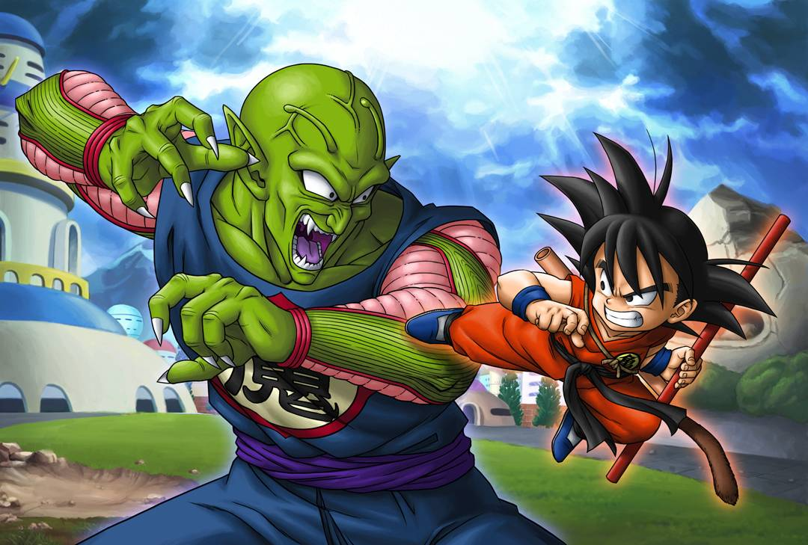
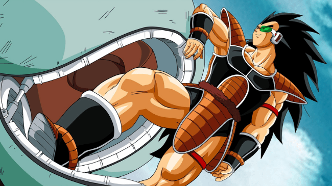
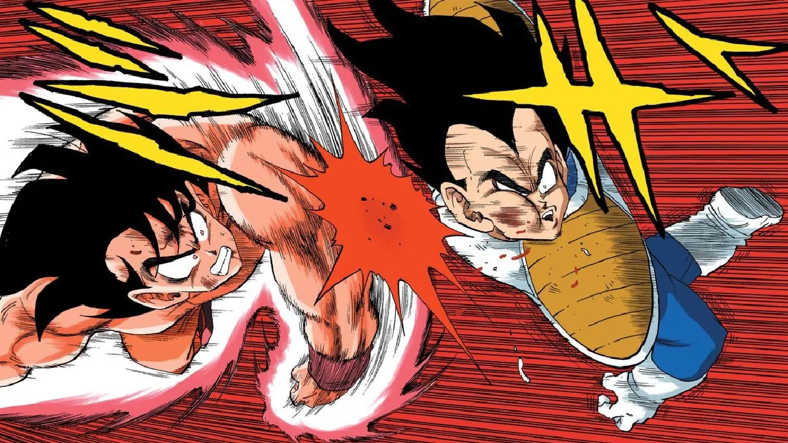
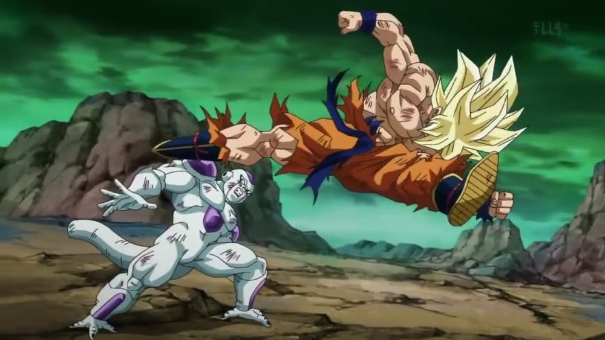
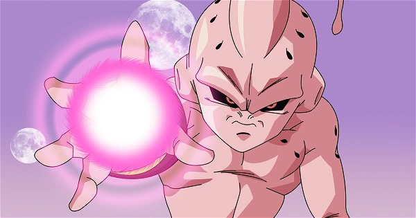
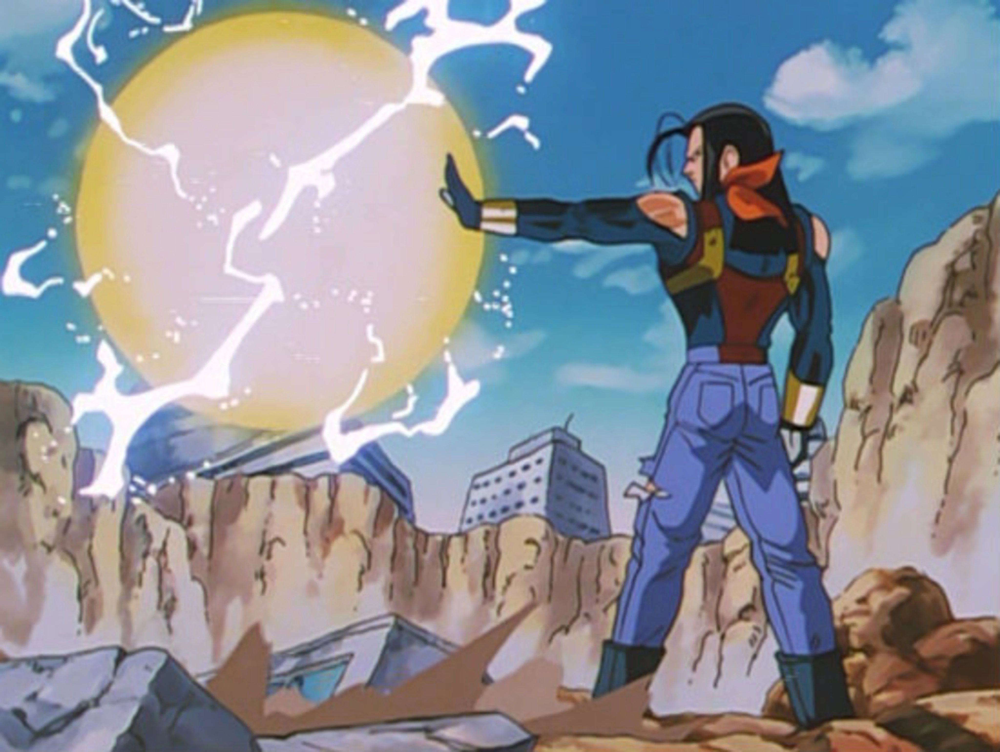
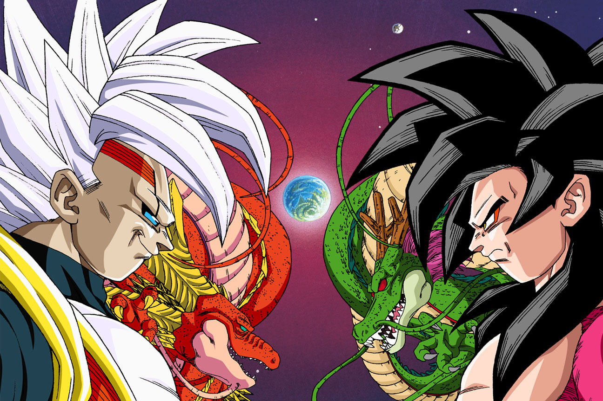
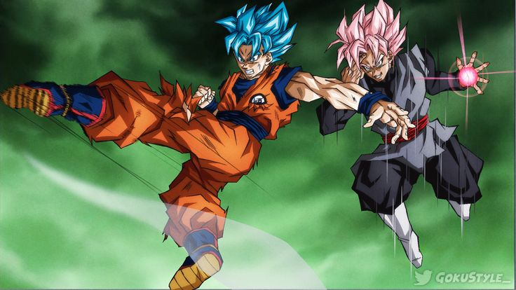
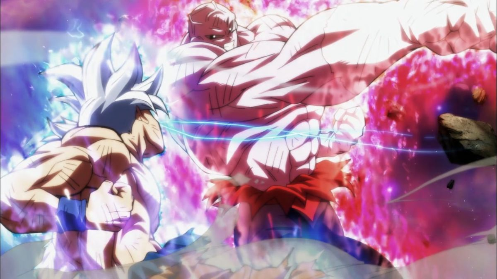

Os inimigos mais forte que Son Goku já enfrentou!

Son Goku, o protagonista da épica saga Dragon Ball, é um guerreiro lendário conhecido por sua determinação inabalável e sua sede insaciável por desafios. Desde seus dias de infância na Terra até suas batalhas intergalácticas, Goku personifica a força, coragem e bondade, tornando-se um símbolo de inspiração para fãs em todo o mundo. Seu cabelo preto espetado e sua icônica faixa laranja são reconhecidos instantaneamente, enquanto sua jornada de crescimento pessoal e busca pela paz continua a encantar gerações.
- Red Ribbon
- Picolo Daimaoh 
- Raditz 
- Vegeta Classico 
- Freeza 
- Majin boo 
- Super Androide 17 
- Baby 
- Goku Black 
- Jiren 

A Red Ribbon é uma organização militar e criminosa fictícia na série Dragon Ball. Conhecida por sua vasta influência e tecnologia avançada, a Red Ribbon é liderada por um conjunto de líderes cruéis e ambiciosos, buscando dominar o mundo e obter as Esferas do Dragão para alcançar seus objetivos. Sua presença é marcada por uniformes militares vermelhos distintivos, enquanto suas bases secretas e tropas altamente treinadas representam uma ameaça constante para os heróis da série, incluindo Son Goku. Ao longo da narrativa, a Red Ribbon se torna um dos principais antagonistas, proporcionando inúmeros confrontos emocionantes e desafiadores para os protagonistas enfrentarem em sua jornada.
Piccolo Daimaoh, também conhecido simplesmente como Piccolo, é um personagem da série Dragon Ball. Ele é a encarnação maligna do Rei Piccolo, um antigo e poderoso vilão que busca dominar o mundo. Piccolo Daimaoh é retratado como um ser impiedoso e calculista, com habilidades de luta excepcionais e uma sede insaciável por poder. Sua aparência distinta inclui pele verde, antenas pontiagudas e um traje tradicional. Ao longo da série, Piccolo Daimaoh evolui como personagem, eventualmente demonstrando uma faceta mais complexa e até mesmo redentora, especialmente após sua fusão com o Namekuseijin Nail e sua conexão com seu "filho" Piccolo Jr. Ele permanece como uma figura icônica, representando tanto o mal impiedoso quanto a capacidade de redenção e crescimento pessoal.
Raditz é o irmão mais velho de Goku e um Saiyajin que chega à Terracom o objetivo de recrutar Goku para se juntar aos Saiyajins. Ele éretratado como um antagonista arrogante e implacável. Sua breveaparição desencadeia uma série de eventos que moldam o enredoprincipal de Dragon Ball Z, incluindo sua batalha com Goku e Piccolo,onde revela suas habilidades de combate formidáveis, mas éeventualmente derrotado. Sua morte precoce marca o início de umajornada épica que transforma Goku e introduz elementos-chave damitologia Saiyajin na série
Vegeta é inicialmente introduzido em Dragon Ball Z como um antagonista cruel e arrogante, um príncipe Saiyajin que serve a Freeza. Ele chega à Terra com Nappa com a intenção de usar as Esferas do Dragão para obter imortalidade. Durante sua luta contra Goku e outros guerreiros, Vegeta demonstra uma força impressionante e uma natureza impiedosa, mostrando pouco remorso ao eliminar seus oponentes. No entanto, ao longo da série, especialmente após sua derrota na luta contra Goku e a subsequente derrota de Freeza, Vegeta passa por uma jornada de redenção e desenvolvimento pessoal. Ele eventualmente se torna um aliado valioso para Goku e seus amigos, lutando ao lado deles contra ameaças cada vez maiores, enquanto luta com seu próprio orgulho e busca de redenção.
Freeza é um dos antagonistas mais icônicos de Dragon Ball Z. Ele é um tirano intergaláctico e imperador do universo conhecido, com uma aparência que combina traços humanoides com uma forma reptiliana. Sua crueldade e despotismo são evidentes desde sua primeira aparição, quando ele destrói o planeta Vegeta, lar dos Saiyajins, com a intenção de eliminar qualquer ameaça ao seu poder. Possuindo uma força incomparável, Freeza é temido por muitos em toda a galáxia. Sua busca pelas Esferas do Dragão é um dos principais enredos da saga Namekusei, onde ele enfrenta Goku em uma batalha épica que resulta em sua derrota aparente. No entanto, ele retorna em formas mais poderosas, desafiando Goku e seus aliados repetidamente. Freeza é caracterizado por sua natureza sádica, seu desejo insaciável de poder e sua determinação em manter seu domínio sobre o universo, tornando-o um dos vilões mais memoráveis da série.
Majin Boo é uma entidade demoníaca e uma das ameaças mais formidáveis enfrentadas pelos protagonistas em Dragon Ball Z. Ele é criado pelo mago Babidi com o objetivo de destruir Goku e seus amigos. Boo existe em diversas formas, inicialmente como um monstro gordo e rosa chamado Boo gordo, que é imprevisível e destrutivo. Posteriormente, ele se transforma em Boo magro e finalmente em seu estado original, Kid Boo, um ser puramente maligno e destrutivo. Boo é conhecido por sua voracidade, sua capacidade de regeneração e seus poderes mágicos, incluindo a capacidade de transformar seres vivos em doces. A batalha contra Majin Boo é uma das mais intensas da série, testando os limites dos heróis e culminando em uma luta final para proteger o universo da destruição iminente
O Super Andróide 17 é uma poderosa fusão entre o Andróide 17 do universo principal e sua contraparte do futuro alternativo. Criado pelo vilão Dr. Gero e seu alter ego, Dr. Myuu, Super Andróide 17 é projetado para ser uma máquina de combate invencível. Ele possui uma força formidável, velocidade sobre-humana e uma série de habilidades especiais, incluindo a capacidade de absorver energia. Super Andróide 17 é desafiadoramente poderoso e se revela como uma ameaça formidável durante sua aparição em Dragon Ball GT. Ele é confrontado pelos heróis em uma batalha épica, onde sua incrível força é posta à prova contra Goku, Vegeta e outros guerreiros. Sua derrota requer a intervenção de estratégias inteligentes e poderosas técnicas de combate.
Baby é um vilão apresentado em Dragon Ball GT, originário do planeta Tuffle. Ele é uma inteligência artificial criada pelos Tuffles como uma arma de vingança contra os Saiyajins após sua extinção. Baby tem a capacidade de controlar corpos hospedeiros, inicialmente assumindo o corpo de um cientista chamado Dr. Myuu. Seu objetivo principal é vingar seu povo exterminado, eliminando os Saiyajins e restaurando o domínio dos Tuffles. Baby é notável por sua habilidade de assumir o controle de outros seres e aumentar seu poder ao absorver energia. Ele se torna uma ameaça crescente para Goku e seus amigos, manipulando outros personagens e desencadeando batalhas intensas. Sua busca por vingança culmina em confrontos épicos, nos quais ele revela suas formas cada vez mais poderosas, desafiando os heróis em uma luta pela sobrevivência do universo.
Goku Black é um antagonista introduzido em Dragon Ball Super. Ele é uma versão alternativa maligna de Goku, originária de um universo paralelo, onde ele é conhecido como Zamasu. Zamasu é um Kaiohshin (Supremo Senhor Kaioh) que desenvolve um profundo ódio pela humanidade após observar suas ações destrutivas. Utilizando a técnica do corpo de Goku, ele se torna Goku Black e viaja para diferentes linhas do tempo para espalhar caos e destruição. Goku Black compartilha muitas das habilidades de Goku, incluindo suas técnicas de combate e o uso do ki. Ele é acompanhado por sua contraparte do universo original, Zamasu, com quem ele se funde para se tornar um ser ainda mais poderoso, conhecido como Fusão Zamasu. Goku Black é uma ameaça formidável que desafia Goku e seus aliados em uma série de batalhas épicas, culminando em um confronto decisivo pelo destino do multiverso.
Jiren é um dos personagens principais apresentados durante o arco do Torneio do Poder em Dragon Ball Super. Ele é um guerreiro extremamente poderoso do Universo 11, sendo membro da Tropa do Orgulho, liderada pelo deus da destruição Vermoud. Jiren é conhecido por sua força incomparável, determinação inabalável e habilidades de combate extraordinárias. Ele é retratado como alguém que prioriza a justiça e a ordem, dedicando-se a proteger seu universo de ameaças externas. Durante o Torneio do Poder, Jiren se destaca como um dos competidores mais formidáveis, enfrentando Goku e outros guerreiros de universos rivais. Sua incrível força e habilidades o colocam como um dos favoritos para vencer o torneio. No entanto, sua personalidade reservada e misteriosa esconde traumas do passado que o motivam em sua busca pela excelência e poder. A batalha épica entre Jiren e Goku, especialmente quando Goku atinge sua forma de Instinto Superior, é um dos momentos mais marcantes do torneio. Ao final, Jiren se torna um aliado relutante de Goku e seus amigos, reconhecendo a importância da amizade e do trabalho em equipe.